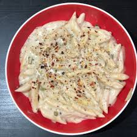

White Sauce Pasta

Description
A delectable Italian classic that combines perfectly cooked pasta with a luxurious white sauce, creating a dish that's both comforting and indulgent. With its rich and velvety flavors, this recipe is sure to satisfy your cravings for a satisfying, homemade meal.
Ingredients
- (16-ounce) package (about 4 cups) penne
- 3 tablespoons unsalted butter
- 2 teaspoons minced garlic
- 3 tablespoons all-purpose flour
- 1 cup milk
- 1 cup chicken broth
- 1 cup grated Parmesan cheese
- 2 teaspoons dried parsley
- garlic salt with parsley flakes or salt to taste
- pepper to taste
- ½ cup shredded mozzarella cheese or additional Parmesan cheese (optional)
Steps
- Cook pasta according to package directions. Drain and set aside.
- Meanwhile, in a large saucepan, melt butter over medium heat. Add garlic and cook, stirring, for 1 minute.
- Add flour and cook, stirring constantly, for 1 minute more.
- Add milk and broth and cook, stirring constantly, until the sauce boils and thickens about 5 minutes.
- Add Parmesan, parsley, garlic salt, and pepper. Continue stirring until the cheese has melted.
- Add pasta to the sauce and stir to combine. Add mozzarella and stir until melted. Serve warm.
Enjoy your dish!
Back to main page